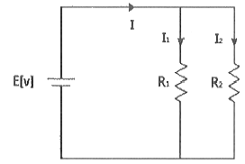
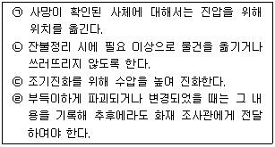
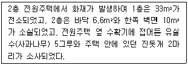
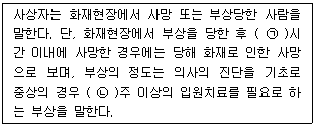
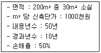
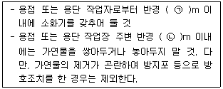
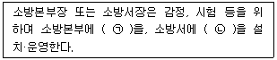
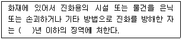
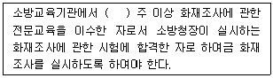
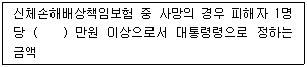

화재감식평가기사 (2017-09-23 기출문제)
1과목: 화재조사론
1. 증기운 형성물질 중 비점이상의 온도지만 가압하여 액화된 물질로 열전달 및 확산이 증발을 제한하는 특징을 갖는 물질은?
- 액화암모니아
- 벤젠
- 액화천연가스
- 액화석유가스
(정답률: 77%)

2. 동일한 거리에서 복사열에 노출되었을 때 물질의 열전도성이 가장 좋은 물질은?
- 참무나 판자
- 구리
- 포리스티렌 판
- 석고보드
(정답률: 86%)
3. 고체가연물 중 표면연소의 형태를 갖는 물질은?
- 금속분
- 목재
- 양초
- 니토로셀룰로오스
(정답률: 57%)
4. 점화원에 대한 설명으로 옳은 것은?
- 온도가 높을수록 최소점화에너지는 높아진다.
- 혼합된 공기의 산소농도에 관계없이 최소 착화에너지는 변하지 않는다.
- 압력이 높을수록 최소 착화에너지는 높아진다.
- 연소범위 내에 있는 가연성 가스는 정전기 등의 약한 에너지로도 점화될 수 있다.
(정답률: 87%)
5. 화염의 색이 백적색일 때 불꽃의 온도는?
- 약 350℃
- 약 800℃
- 약 1300℃
- 약 1500℃
(정답률: 87%)
6. 고분자물질과 융점의 연결이 틀린 것은?
- 폴리에틸렌 – 약 220℃
- 폴리프로필렌 – 약 214℃
- 폴리카보네이트 – 약 175℃
- 폴리우레탄 – 약 155℃
(정답률: 63%)
7. 화재조사의 책임과 권한에 대한 설명으로 옳은 것은?
- 소방서장은 관계보함사가 그 화재원인과 피해상황을 조사하고자 할때에는 이를 허용해서는 안된다.
- 소방서장은 화재의 원인 및 피해 등에 대한 조사를 소화활동 후에 실시하여야 한다.
- 과실로 인한 위법행위로 타인에게 손해를 가한 자는 그 손해를 배상할 책임이 없다.
- 소방서장은 화재조사를 위하여 필요한 경우에는 수사에 지장을 주지 아니하는 범위에서 그 피의자 또는 압수된 증거물에 대한 조사를 할 수 있다.
(정답률: 92%)
8. 가연물별 분류에 따른 화재와 색상이 옳은 것은?
- 일반화재 - 황색
- 유류화재 - 백색
- 전기화재 - 빨간색
- 금속화재 – 무색
(정답률: 87%)
9. 삼각형(△) 패턴에 대한 설명으로 틀린 것은?
- 삼각형 패턴은 유류가 사용된 곳에서 연소가 끝난 바닥면에 나타난다.
- 삼각형 패턴은 연소가 짧은 시간에 이루어질 때 수직벽면에 나타난다.
- 삼각형 패턴은 바닥에서 천장까지 완전히 전개되지 않는 화재에 나타난다.
- 삼각형 패터는 불기둥을 수직적으로 차단하지 않을 경우에 나타난다.
(정답률: 63%)
10. 발화점이 약 34℃로 매우 낮아 공기 중에 노출되면 자연발화를 일으키므로 이를 방지하기 위하여 물속에 저장하여야 하는 위험물은?
- 유황
- 리튬
- 황린
- 나트륨
(정답률: 79%)
11. 소방기본법령상 소방본부(거점소방서 포함) 화재조사전담부서에서 갖추어야 할 화재조사 장비 및 시설 중 발굴용구가 아닌 것은?
- 접자
- 니퍼
- 뜰채
- 양동이
(정답률: 71%)
12. 감광계수(m-1)에 따른 가시거리가 틀린 것은?
- 감광계수 0.1 – 가시거리 20~30m
- 감광계수 0.3 – 가시거리 5m
- 감광계수 0.5 – 가시거리 1~2m
- 감광계수 10 – 가시거리 0.2~0.5m
(정답률: 61%)
13. 다음 목재의 표면에 나타나는 특징에 따른 균열혼으로 옳은 것은?
- 완소흔
- 강소흔
- 박리흔
- 열소흔
(정답률: 36%)
14. 끓는점 이상의 온도이지만 압력에 의해 액체 상태를 유지하고 있는 물질이 탱크의 균열이나 파열에 의해 외부로 누출되면서 급격히 기화되어 압력을 발생시키는 폭발현상은?
- 보일오버(Boil Over)
- 비등액체패창증기폭발(BLEVE)
- 증기운폭발(UVCE)
- 급격한 상변화에 의한 폭발(ERPT)
(정답률: 79%)
15. 여러 동의 인접한 건물이 소손되어 있는 화재현상에서 발화건물 판정을 위한 일반적인 조사요령에 관한 설명 중 틀린 것은?
- 화재현장 전체의 연소방향은 가급적 낮은 쪽에서 높은 쪽을 바라보며 파악한다.
- 각 건물의 연소방햐은 타다 멈춘 부분 또는 연소강약이 명확한 부분부터 파악한다.
- 타서 허물어진 부분을 보고 연소방향을 추정할 수 있다.
- 복수의 건물이 소손되어 있으면 인접동 간격, 외벽구조, 개구부상황 등으로부터 연소상황을 파악한다.
(정답률: 86%)
16. 물과 접촉 시 가연성 기체를 발생하지 않고 발열반응으로 인하여 주변의 가연물을 발화시키는 물질은?
- 산화칼슘
- 인화알루미늄
- 탄화칼슘
- 칼륨
(정답률: 61%)
17. 화학화재 발생 시 조사자가 행하여할 절차 중 옳은 것은?
- 가치부여 → 자료의 수집 → 체계부여 → 타당성을 밝힘 → 화재원인의 결정
- 자료의 수집 → 가치부여 → 체계부여 → 타당성을 밝힘 → 화재원인의 결정
- 자료의 수집 → 체계부여 → 가치부여 → 타당서을 밝힘 → 화재원인의 결정
- 자료의 수집 → 가치부여 → 타당성을 밝힘 → 체계부여 → 화재원인의 결정
(정답률: 74%)
18. 유리의 파단면 분석에 대한 설명으로 옳은 것은?
- 충격에 의한 파괴유리의 충격방향을 확인하기 위해서는 동심원파단면의 월러라인(Wallnet Line)을 확인하는 것이 효과적이다.
- 여러 종류의 외력이 혼합되어 순차적으로 유리가 파괴되었을 때에 모두 쏟아졌다고 하여도 외력의 순서를 알 수 있다.
- 화재와 폭발 이벤트가 함께 이루어진 현장의 유리파편에서 현장으로 멀리 비산된 유리에 그을음이 부착되어 있다면 화재이전 폭발이 발생하였다고 추정할 수 있다.
- 강화유리의 자발파괴(Spontaneous Breakage)형태는 쌍을 이루는 8각형의 파편이 발견된다.
(정답률: 47%)
19. 탄화알루미늄이 상온에서 물과 반응할 경우 생성되는 가연성 기체는?
- 수소
- 아세틸렌
- 메탄
- 프로판
(정답률: 54%)
20. 방화의 식별에 따른 일반적인 방화의 가능성이 있는 경우가 아닌 것은?
- 화재가 건물의 구조, 가연물 등에 비해 급격히 확산된 경우
- 최초 발화지점에서 유류 등 연료물질을 사용한 흔적이 있는 경우
- 출입문, 창 등에 강제로 진입한 흔적이 있는 경우
- 연소기구를 중심으로 연소 확대가 진행된 흔적이 있는 경우
(정답률: 90%)
2과목: 화재감식론
21. 그림과 같은 회로에서 저항 R1과 저항 R2에 흐르는 전류를 I1과 I2로 표시할 때, I1 / I2는 얼마인가? (단, E[V]는 회로에 가해지는 인가전압이다.)

- R1 / R2
- R2 / R1
- I (R1 / R2)
- I (R2 / R1)
(정답률: 65%)
22. 연소한계에 대한 설명 중 옳은 것은?
- 연소하한계는 저온에서는 약간 증가하나 고온에서는 일정하다.
- 연소한계는 온도와 관계없이 일정하다.
- 연소상한계는 온도의 증가와 함께 증가한다.
- 연소하한계는 온도의 증가와 함께 증가한다.
(정답률: 72%)
23. 분해열의 축적으로 자연발화를 일으키는 물질이 아닌 것은?
- 폴리에스테르
- 셀룰로이드
- 니트로글리세린
- 니트로셀룰로오스
(정답률: 70%)
24. 서로 밀착되어 있는 물체가 떨어지거나 벗겨져 떨어질 때 전하분리가 일어나 정전기가 발생하는 현상은?
- 박리대전
- 유동대전
- 마찰대전
- 분출대전
(정답률: 80%)
25. 분진폭발을 일으킬 가능성이 없는 것은?
- 목분
- 마그네슘 분말
- 폴리에틸렌 분말
- 산화규소 분말
(정답률: 60%)
26. 선박용 축전지의 보관방법으로 틀린 것은?
- 축전지 상자는 다른 전기설비와 격리한다.
- 축전지실은 화기로부터 격리한다.
- 발전기에 의해 충전되는 축전지에는 역류방지장치를 설치한다.
- 축전지 및 축전지 상자는 대기와 차단한다.
(정답률: 76%)
27. 임야화재 시 수관화의 특징으로 옳은 것은?
- 중심부의 화염온도는 2000℃ 이다.
- 주변의 연기온도는 1000℃이다.
- 바람이 강할 때 연소속도는 10 km/h 이다.
- 임야화재 연소 중에 수십 m의 상승기류가 발생한다.
(정답률: 71%)
28. 다음 중 황의 산화수가 가장 큰 것은?
- S8
- H2SO4
- SO32-
- Na2S2O3
(정답률: 68%)
29. 방화로 의심할 수 있는 경우가 아닌 것은?
- 출입문이 잠겨 있는 경우
- 촉진제의 용기가 발견된 경우
- 외부침입 흔적이 발견된 경우
- 다른 범죄의 증거가 발견된 경우
(정답률: 87%)
30. 산불의 강도를 가중시키는 조건으로 틀린 것은?
- 연료온도를 증가시크는 사면
- 가파른 경사
- 굴뚝지형
- 평지
(정답률: 81%)
31. 유염연소와 무염연소를 비교하였을 때 특징으로 틀린 것은?
- 목재의 무염연소 시 가연물의 내부보다는 표면으로 전파되는 속도가 빠르다.
- 무염연소는 고체가연물에서만 가능하며 유염연소는 고체, 액체, 기체에서 모두 가능하다.
- 무염연소는 연소반응속도가 느리다.
- 무염연소는 발열량이 적고, 유염연소는 발열량이 크다.
(정답률: 63%)
32. 항공기 보조동력장치(APU)의 소화용기(container) 내용물이 과도한 열로 인하여 외부로 배출 시 나타나는 반응으로 옳은 것은?
- 온도방출지시기(thermal discharge indicator)의 Red Disk가 없다.
- 온도방출지시기(thermal discharge indicator)의 Yellow Disk가 없다.
- 배출밸브(discharge valve)가 열린다.
- 조종실에 경고등이 들어온다.
(정답률: 53%)
33. 산화에틸렌 90%와 메탄 10%가 혼합되어 있는 경우 폭발하한계로 옳은 것은? (단, 메탄의 연소범위는 5~15 vol.%, 산화에틸렌의 연소범위는 3~80 vol.%이다.)
- 1.79 vol.%
- 3.13 vol.%
- 32 vol.%
- 55.81 vol.%
(정답률: 69%)
34. 자동차화재의 특성에 대한 설명으로 옳은 것은?
- 차량화재는 연료, 시트 등 화재하중이 낮고, 외기와 밀폐된 상태인 환기 지배형의 화재특성을 보인다.
- 차량화재의 조사는 특별한 전문지식이 없어도 화재조사가 가능하다.
- 차량화재는 대체로 전소가 되지 않기 때문에 발화지점 및 발화원인의 조사가 용이하다.
- 개방된 공간에 존치되는 환경적인 특수성으로 인해 사회적인 불만을 가진자 등이 불특정한 방법으로 방화를 할 수 있다.
(정답률: 83%)
35. 전기세탁기 화재가 발생하였을 때 전기화재의 조사 요점으로 틀린 것은?
- 잡음 방지 콘덴서의 절연열화 상태
- 마그네트론의 열화
- 배수 전자 밸브의 이상
- 세탁기 내부 배선간의 단락 여부
(정답률: 48%)
36. 하나의 전제에서 결론이 도출되는 직접추리와 2개 이상의 전제에서 결론이 나타나는 간접추리로 나누는 추론 방법은?
- 귀납적 추론
- 연역적 추론
- 실용적 추론
- 형식적 추론
(정답률: 64%)
37. 차량의 동력전달장치 순서가 옳은 것은?
- 기관 → 클러치 → 변속기 → 종 감속장치 및 차동기어장치 → 추진축(앞 기관 뒷바퀴 구동의 경우) → 차축 → 구동바퀴
- 기관 → 변속기 → 클러치 → 종 감속장치 및 차동기어장치 → 추진축(앞 기관 뒷바퀴 구동의 경우) → 차축 → 구동바퀴
- 기관 → 클러치 → 변속기 → 추진축(앞 기관 뒷바퀴 구동의 경우) → 차축 → 종 감속장치 및 차동기어장치 → 구동바퀴
- 기관 → 클러치 → 변속기 → 추진축(앞 기관 뒷바퀴 구동의 경우) → 종 감속장치 및 차동기어장치 → 차축 → 구동바퀴
(정답률: 37%)
38. 화학물질의 혼합발화와 관련하여 감식요령으로 틀린 것은?
- 물질의 성질, 취급의 상황, 장송의 환경조건에 대하여 조사한다.
- 혼합 물질의 재현실험은 실시하지만 단독 물질의 발화 여부 실험은 하지 않는다.
- 화재가 난 곳에서 존재하는 물질에 대하여 성분, 성질, 형상, 양을 관계자와 진술과 문헌·자료 등을 기초로 조사한다.
- 혼합발화에 의한 화재는 혼합한 물질 자체가 연소하므로 증거가 소실되는 경우가 많다.
(정답률: 89%)
39. 양초의 성상과 연소특징에 대한 설명으로 틀린 것은?
- 가솔린, 벤젠 등에 녹는다.
- 물과 친화성이 없고 전기절연성이 우수하다.
- 휘발성이 강하고 착화가 어려우며, 유해가스를 발생시키지 않고 연소한다.
- 양초의 연소는 증발연소이며, 심지 없이 양초 자체만으로는 연소가 지속되지 않는다.
(정답률: 75%)
40. 발화원에 대한 설명으로 틀린 것은?
- 가연물의 발화온도에 이르는 높은 에너지를 가지고 있다.
- 대체로 발화지점이나 그 근처에 존재할 수 있다.
- 변경되거나 파괴되지 않은 상태로 존재한다.
- 발화원인을 증명하기 위해 확인되어야 한다.
(정답률: 82%)
3과목: 증거물관리 및 법과학
41. 화재현장에서 증거물 채취의 일반적인 절차로 옳은 것은?
- 채취 과정의 입증조치는 입회인만 있으면 된다.
- 화재현장은 어둡고 확인이 되지 않으므로 무조건 많은 증거물을 채취한다.
- 증거물의 발견장소는 중요하지 않으므로 관계자 진술로 대처한다.
- 수집증거의 바견 장소 및 그 상태를 명확하게 해놓아야 한다.
(정답률: 85%)
42. 뜨거운 물에 접촉하여 새기는 화상을 무엇이라 하는가?
- 접촉화상
- 열탕화상
- 화학하상
- 화염화상
(정답률: 79%)
43. 다음 보기를 참고하여 화재진압 및 구조 과정에서의 현장보존을 위한 주의사항 중 옳은 것은?

- ㉠, ㉢
- ㉡, ㉢
- ㉠, ㉣
- ㉡, ㉣
(정답률: 84%)
44. 화재조사와 관련하여 관계자에게 질문 시 유의사항으로 틀린 것은?
- 질문내용을 사전에 준비한다.
- 희망하는 진술내용을 얻기 위하여 먼저 신분을 밝히지 않는 것이 좋다.
- 희망하는 진술내용을 얻기 위하여 상대방에게 암시하는 등의 방법으로 유도하여서는 안 된다.
- 소문 등에 의한 사항은 그 사실을 직접 경험한 사람의 진술을 얻도록 하여야 한다.
(정답률: 82%)
45. 화재피해자의 CO-Hb 농도로 추정할 수 있는 것은?
- 화재 피해자의 화재 시 생존 여부
- 화재 피해자의 음주여부
- 화재 피해자의 연령대
- 화재 피해자의 사망시간
(정답률: 66%)
46. 외부에서 열이 가해지면 열에 의한 손상의 범위를 결정하는 사항이 아닌 것은?
- 가연물의 양
- 가해진 온도
- 열이 가해진 시간
- 과다한 열을 배출하는 체표면의 능력
(정답률: 60%)
47. 물적증거를 오염으로부터 방지할 수 있는 방법으로 틀린 것은?
- 평소 증거용기를 오염되지 않도록 관리한다.
- 증거수집용기는 현장에서 증거를 수집한 후 즉시 밀폐한다.
- 증거물 보관용기를 수집기구로 쓰는 것은 오염을 증가시킬 수 있으므로 되도록 하지 않는다.
- 수집용기의 오염원을 제한하기 위해 제조업자로부터 공급받은 즉시 용기를 밀봉하는 방법도 있다.
(정답률: 85%)
48. 플라스틱 증거물에 관한 설명으로 옳은 것은?
- 탄화수소계의 기본적인 고체 가연물인 플라스틱의 약 90%는 열경화성이다.
- PVC와 같은 열경화성 물질은 가열되면 용융, 변형, 그리고 드롭다운 패턴이 형성된다.
- 폴리우레탄 같은 열가소성 물질은 탄화물질을 형성하지 않는다.
- 열가소성 물질은 용해되고 흘러서 2차 화재의 원인이 된다.
(정답률: 57%)
49. 증거물 수집용기 중 모양과 크기가 다양하고 보관이 편리하며 휘발서 액체의 오염 방지의 장점을 가진 것은?
- 금속 캔
- 유리병
- 특수증거물 봉투
- 일반 플라스틱 용기
(정답률: 57%)
50. 화재현장에 있는 벽면이나 철판 등에 발생하는 백화현상에 대한 설명으로 옳은 것은?
- 한번 부착된 그을음은 없어지지 않는다.
- 그을음이 부착되었다가 열에 의해 연소한 흔적이다.
- 열에 의해 가열되었다가 급속히 냉각된 흔적이다.
- 훈소로 발생한 가연성 증기가 응축하면서 부착된 흔적이다.
(정답률: 71%)
51. 화재 증거물의 수송으로 권장할 만한 가장 적절한 방법인 것은?
- 화물로의 배송
- 직접운반
- 제3자 전달
- 우편배송
(정답률: 88%)
52. 시반에 관한 설명으로 옳은 것은?
- 시반은 사망 시간을 나타내는 지표로 사용된다.
- 시반은 시신의 사망 전 이동 여부를 나타낸다.
- 시반은 3~4시간 후에 더 이상 진행되지 않는다.
- 시반은 우리 몸의 가장 높은 신체부위에 발생한다.
(정답률: 83%)
53. 화재현장 촬영기법에 대한 설명으로 틀린 것은?
- 인근의 높은 건물에 올라가서 화재현장 전체를 촬영한다.
- 원거리, 중거리, 근거리의 순으로 화재현장을 촬영한다.
- 한 장에 다 들어가지 않으면 연결(파노라마)사진으로 촬영한다.
- 발화지점 위주로만 촬영한다.
(정답률: 87%)
54. 인화성 액체를 유리병 용기에 수집하는 경우 주의사항으로 옳은 것은?
- 인화성액체를 깨끗이 정제한 후 수집할 것
- 유리병 뚜껑은 접착제나 고무봉인이 없을 것
- 유리병 내용적의 1/3 이상을 채우지 않을 것
- 장기간 보관 용기로 사용하지 말 것
(정답률: 62%)
55. 피사계 심도를 깊게 하기 위한 방법으로 옳은 것은?
- 조리개를 좁힌다.
- 조리개를 넓힌다.
- 셔터 스피드를 길게 한다.
- 셔터 스피드를 짧게 한다.
(정답률: 77%)
56. 가연성 액체가 살포된 수평재에서 발견되는 패턴이 아닌 것은?
- 포어 패턴
- 도넛 패턴
- V 패턴
- 스플래쉬 패턴
(정답률: 74%)
57. 밀도가 낮고 인화점이 93℃ 미만인 액체의 인화점을 테스트하는 방법은?
- Tag Closed Tester
- Cleveland Open Cup
- Tag Open Cup Apparatus
- Pensky-Martens Closed Tester
(정답률: 72%)
58. 연소범위에 영향을 미치는 요인에 대한 설명으로 틀린 것은?
- 압력이 높아지면 하한값은 크게 변하지 않으나 상한값은 높아진다.
- 고온·고압의 경우 연소범위는 더욱 넓어진다.
- 혼합기를 이루는 공기의 산소농도가 높을수록 연소범위는 넓어진다.
- 온도가 높아질수록 연소범위는 좁아진다.
(정답률: 79%)
59. 화재사의 소견이 아닌 것은?
- 투사형자세가 되었다.
- 매가 기도내에 부착되었다.
- 십이지장내에서 매가 발견되었다.
- 상기도의 점막에서 충혈, 종창 등 열에 의한 변화가 일어났다.
(정답률: 57%)
60. 화상사의 사체소견이 아닌 것은?
- 각 장기에서 빈혈상을 보인다.
- 피부 표면에 1도에서 4도의 화상이 보인다.
- 내부 장기는 열로 인해 부풀어 오른다.
- 사망이 지연되면 실질장기의 혼탁종창이 나타난다.
(정답률: 52%)
4과목: 화재조사보고 및 피해평가
61. 화재현장조사서 작성 시 화재원인 검토와 관련된 내용 중 필수 검토항목이 아닌 것은?
- 방화 가능성
- 전기적 요인
- 인적 부주의
- 관련 조치사항
(정답률: 76%)
62. 다음 조건을 참고하여 화재피해액 산정에 대한 설명으로 틀린 것은?

- 전원주택 화재피해액 산정공식은 「신축단가×소실면적×[1-(0.8×경과연수/내용연소)]×손해율」 이다.
- 전원주택의 피해면적은 1층과 2층의 소실바닥면적을 합한 49.6m2이다.
- 사과나무의 경우 수익환원법에 의한다.
- 진돗개 2마리의 피해산정은 시중 매매가격으로 한다.
(정답률: 71%)
63. 가재도구 화재피해액 산정기준의 간이평가방식 중 주택종류별 가중치는 몇 % 인가?
- 10%
- 20%
- 30%
- 40%
(정답률: 47%)
64. 화재조사 및 보고규정상 다음 ( )안에 알맞은 것은?

- ㉠ 48, ㉡ 3
- ㉠ 72, ㉡ 3
- ㉠ 48, ㉡ 4
- ㉠ 72, ㉡ 4
(정답률: 77%)
65. 화재조사 및 보고규정상 소방서장이 관할 구역 내에서 발생한 화재에 대하여 작성하여야 할 화재조사서류가 아닌 것은?
- 재산회계 보고서
- 질문기록서
- 화재현장출동보고서
- 화재발생종합보고서
(정답률: 77%)
66. 화재조사 및 보고규정상 화재증명원의 발급에 대한 설명으로 옳은 것은?
- 소방대가 출동하지 아니한 화재장소의 화재증명원 발급요청이 있는 경우 즉시 발급하여야 한다.
- 화재증명원 발급 시 재산피해 및 인명피해에 대하여 조사중인 경우 “조사중”으로 기재한다.
- 화재증명원 발급 시 재산피해내역은 피해금액과 종류를 기재한다.
- 보험사에서 화재증명원을 공문으로 발급요청을 하더라도 공용 발급할 수는 없다.
(정답률: 77%)
67. 화재범위가 2이상의 관할구역에 걸친 화재에 대한 설명으로 옳은 것은?
- 발화 소방대상물의 소재지를 관할하는 소방서와 출동한 소방서에서 각각 1건의 화재로 한다.
- 관할 소방서장과 출동한 소방서장과 협의하여 정한다.
- 출동하여 진압한 소방서에서 1건의 화재로 한다.
- 발화 소방대상물의 소재지를 관할하는 소방서에서 1건의 화재로 한다.
(정답률: 78%)
68. 화재현장조사서 작성 시 연소확대물에 대한 설명으로 틀린 것은?
- 연소확대물은 최초착화물에 불이 붙어 화재가 발생한 후 연소가 확대되는데 있어 결정적 영향을 미친 가연물을 말한다.
- 연소확대물의 분류항목은 최초착화물의 분류항목과 동일하다.
- 최초착화물과 연소확대물이 동일한 경우에도 연소확대물을 표시한다.
- 연소확대물은 필수 입력사항이므로 반드시 코드를 기재해야 한다.
(정답률: 54%)
69. 난로의 과열로 인해 화재가 발생하여 바닥 5m2와 한쪽 벽 3m2만 소실되었다. 이 경우 화재피해조사서(재산피해) 작성 시 소실면적은 몇 m2인가?
- 8
- 4
- 2
- 1.6
(정답률: 72%)
70. 화재유형별 조사서(위험물·가스제조소등 화재)의 위험물 제조소 등의 항목이 아닌 것은?
- 액화석유가스 저장시설
- 옥외탱크 저장소
- 판매 취급소
- 주유 취급소
(정답률: 74%)
71. 화재발생종합보고서 작성 시 건물의 동수 산정에 관한 기준으로 틀린 것은?
- 주요 구조부가 하나로 연결되어 있는 것은 1동으로 한다. 다만, 건널 복도 등으로 2이상의 동에 연겯뢰어 있는 것은 그 부분을 절반으로 분리하여 각 동으로 한다.
- 구조와 관계없이 지붕 및 실이 하나로 연결되어 있는 것은 동일 동으로 본다.
- 목조 또는 내화조 건물의 경우 격벽으로 방화구획이 되어 있는 경우는 별동으로 한다.
- 독립된 건물과 건물 사이에 차광막, 비막이 등의 덮개를 설치하고 그 밑을 통로 등으로 사용하는 경우는 별동으로 한다.
(정답률: 74%)
72. 화재현장출동보고서의 작성자에 대한 설명으로 틀린 것은?
- 원칙적으로 일반대원보다 선착대의 대장을 작성자로 한다.
- 화재현장에 출동한 소방대원이 실제로 관찰·확인한 연소상황이나 정보를 직접 기재한다.
- 구조대원 또는 구급대원은 작성자가 될 수 없다.
- 보고서의 작성자는 화재현장에 출동한 소방공무원으로 한정된다.
(정답률: 79%)
73. 화재현황조사서에 명시된 발화요인으로 옳은 것은?
- 작동기기
- 교통사고
- 불꽃, 불티
- 담뱃불, 라이터불
(정답률: 64%)
74. 주택에서 다음 조건과 같이 원인미상의 화재가 발생한 경우의 건물피해액은?

- 10000천원
- 12600천원
- 15300천원
- 16500천원
(정답률: 66%)
75. 동·식물의 피해액 산정 기준으로 옳은 것은?
- 전문가의 감정가격
- 공인 감정가격
- 시중매매가격
- 감정서의 감정가액
(정답률: 82%)
76. 화재로 인한 공구 및 기구의 소손 정도에 따른 손해율 중 틀린 것은?
- 50% 이상 소손되고 그을음 및 수침오염 정도가 심한 경우 : 100%
- 손해정도가 다소 심한 경우 : 70%
- 손해정도가 보통인 경우 : 30%
- 오염·수침손의 경우 : 10%
(정답률: 56%)
77. 화재현장조사서 중 화재현장 활동상황의 기재항목으로 틀린 것은?
- 신고 및 초기조치
- 화재진압 활동
- 화재조사 활동
- 인명구조 활동
(정답률: 56%)
78. 다음의 피해산정 대상들 중 최종잔가율이 10%인 것은?
- 절삭공구
- 전기설비
- 옥내소화전
- 침대
(정답률: 72%)
79. 화재현황조사서에 기입해야 할 항목이 아닌 것은?
- 연소확대 사유
- 발화관련 기기
- 방화동기
- 보험가입 사항
(정답률: 58%)
80. 화재피해조사 중 재산피해유형에 관한 설명으로 틀린 것은?
- 소실피해 : 열에 의한 탄화, 용융, 파손 등의 피해
- 수손피해 : 소화활동으로 발생한 수손피해 등
- 기타피해 : 물품반출, 화재 중 발생한 폭발 등에 의한 피해도 포함.
- 영업피해 : 화재발생으로 영업을 하지 못해 발생한 엽업손실
(정답률: 80%)
5과목: 화재조사관계법규
81. 소방기본법령상 용접 또는 용단 작업장에서 불꽃을 사용하는 용접·용단기구 사용에 있어서 지켜야 하는 사항 중 다음 ( )안에 알맞은 것은? (단, 산업안전보건법상 안전조치의 적용을 받는 사업장의 경우는 제외한다.)

- ㉠ 5, ㉡ 7
- ㉠ 7, ㉡ 5
- ㉠ 5, ㉡ 10
- ㉠ 10, ㉡ 5
(정답률: 75%)
82. 화재조사 및 보고규정상 용어의 정의 중 옳은 것은?
- 발화열원이란 화재가 발생한 부위를 말한다.
- 조사관이란 화재조사업무를 수행하는 소방공무원을 말한다.
- 발화요인이란 발화에 관련된 불꽃 또는 열을 발생시킨 기기 또는 장치나 제품을 말한다.
- 연소확대물이란 연소가 확대되는데 있어 결정적 영향을 미친 가연물을 말한다.
(정답률: 61%)
83. 화재증거물수집관리규칙상 화재 현장에서의 증거물 수집, 보관 등에 관한 기준 중 틀린 것은?
- 증거물을 수집할 때는 휘발성이 높은 것에서 낮은 순서로 진행하여야 한다.
- 증거물이 파손될 우려가 있는 경우에 충격금지 및 취급방법에 대한 주의사항을 증거물의 포장 내측에 적절하게 표기하여야 한다.
- 증거서류로 사본을 수집할 경우 원본과 대조한 다음 원본대조필을 하여야 하며, 원본대조를 할 수 없을 경우 제출자에게 원본과 같음을 확인 후 서명 날인을 받아서 영치하여야 한다.
- 증거물은 화재 증거 수집의 목적달성 후에는 관계인에게 반환하여야 한다. 다만, 관계인의 승낙이 있을 때에는 폐기할 수 있다.
(정답률: 73%)
84. 소방기본법령상 화재원인조사의 종류가 아닌 것은?
- 연소상황 조사
- 발화원인 조사
- 재산피해 조사
- 소방시설 등 조사
(정답률: 77%)
85. 제조물책임법상 손해배상을 지는 자가 손해배상책임을 면하는 기준 중 틀린 것은?
- 제조업자가 해당 제조물을 공급하지 아니하였다는 사실을 입증한 경우
- 제조업자가 해당 제조물을 공급한 당시의 과학·기술수준으로는 결함의 존재를 발견할 수 없었다는 사실을 입증한 경우
- 제조물의 결함이 제조업자가 해당 제조물의 결함이 발생할 당시의 법령이 정하는 기준을 준수함으로써 발생한 사실을 입증한 경우
- 원재료나 부품의 경우에는 그 원재료나 부품을 사용한 제조물 제조업자의 설계 또는 제작에 관한 지시로 인하여 결함이 발생하였다는 사실을 입증한 경우
(정답률: 60%)
86. 제조물책임법상 손해배상의 청구권은 제조업자가 손해를 발생시킨 제조물을 공급한 날부터 몇 년 이내에 행사하여야 하는가?
- 3
- 5
- 7
- 10
(정답률: 58%)
87. 화재조사 및 보고규정상 감식, 감정 및 시험 등 기준 중 다음 ( ) 안에 알맞은 것은?

- ㉠ 화재조사 시험·분석연구실, ㉡ 화재조사분석실
- ㉠ 화재조사분석실, ㉡ 화재조사 시험·분석연구실
- ㉠ 화재조사 연구실, ㉡ 화재조사분석실
- ㉠ 화재조사분석실, ㉡ 화재조사 연구실
(정답률: 71%)
88. 경범죄 처벌법령상 충분한 주의를 하지 아니하고 건주물, 수풀, 그 밖에 불붙기 쉬운 물건 가까이에서 불을 피웠을 경우 부과될 수 있는 범칙금액은?
- 5만원
- 8만원
- 10만원
- 20만원
(정답률: 56%)
89. 화재조사 및 보고규정상 조사관의 책임으로 옳은 것은?
- 조사기록 서류 등의 검토·분석 및 관리
- 조사요원 등의 지휘감독과 화재조사 집행
- 현장보존, 정보관리 및 관계기관에서의 협조
- 조사본부 운영 및 총괄에 관한 사항처리
(정답률: 65%)
90. 형법상 업무상과실 또는 중대한 과실로 인하여 실화의 죄를 범한 자에 대한 벌칙 기준으로 옳은 것은?
- 2년 이하의 금고 또는 700만원 이하의 벌금
- 3년 이하의 금고 또는 2000만원 이하의 벌금
- 5년 이하의 금고 또는 1500만원 이하의 벌금
- 7년 이하의 금고 또는 2000만원 이하의 벌금
(정답률: 63%)
91. 형법상 진화방해에 대한 벌칙 기준 중 다음 ( )안에 알맞은 것은?

- 10
- 7
- 5
- 3
(정답률: 77%)
92. 실화책임에 관한 법률상 배상의무자에 손해 배상액 경감 청구가 있을 경우 법원이 손해배상액을 경감할 수 있는 고려 기준 중 틀린 것은? (단, 실화가 중대한 과실로 인한 것이 아닌 경우이다.)
- 화재의 원인과 규모
- 피해자의 경제상태
- 배상의무자의 경제상태
- 피해 확대를 방지하기 위한 피해자의 노력
(정답률: 53%)
93. 화재조사 및 보고규정상 화재증명원의 발급 기준 중 틀린 것은?
- 소방서장은 민원인이 화재증명원의 발급을 신청하면 화재증명원발급대장에 기록을 한 후 화재증명원을 발급하여야 하며, 관공서, 공공기관·단체, 보험사에서 공문으로 발급을 요청 시 고용 발급하 수 있다.
- 소방서장은 화재피해자로부터 소방대가 출동하지 아니한 화재장소의 화재증명원 발급요청이 있는 경우에 조사관 또는 조사자로 하여금 사후 조사를 실시하게 할 수 있다.
- 민원인으로부터 화재증명원 교부신청을 받은 소방서장은 화재발생장소 관할지역에 관계없이 화재발생장소 관할소방서로부터 화재사실을 확인 받아 화재증명원을 교부할 수 있다.
- 사후 조사를 실시하게 하는 경우 민원인이 제출한 화재사후 조사의뢰서의 내용에 따라 사후조사는 현장이 보존되어 있지 않은 경우에도 실시하여야 한다.
(정답률: 77%)
94. 화재로 인한 재해보상과 보험가입에 관한 법률상 특수건물의 신체손해배상특약부 화재보험에 가입하지 아니한 자의 벌칙기준으로 옳은 것은?
- 100만원 이하의 벌금
- 300만원 이하의 벌금
- 500만원 이하의 벌금
- 700만원 이하의 벌금
(정답률: 73%)
95. 화재로 인한 재해보상과 보험가입에 관한 법률상 특수건물 중 소유자의 손해배상책임, 보험가입의 의무를 적용하지 아니하는 기준으로 틀린 것은?
- 대한민국에 주둔하는 외국 군대가 소요하는 건물
- 대한민국에 파견된 외국의 대사·공사 또는 그 밖에 이에 준하는 사절이 소유하는 건물
- 군사용 건물과 외국인 소유 건물로서 총리령으로 정하는 건물
- 대한민국에 파견된 국제연합의 기관 및 그 직원(외국인만 해당)이 소유하는 건물
(정답률: 70%)
96. 소방기본법령상 화재조사전담부서의 장이 소속 소방공무원 가운데 화재조사를 실시하도록 하여야 하는 자의 기준 중 다음 ( )안에 알맞은 것은?

- 15
- 12
- 10
- 8
(정답률: 70%)
97. 화재로 인한 재해보상과 보험가입에 관한 법률상 특수건물 소유자가 신체손해배상특약부 화재보험에 가입하는 보험의 보험금액 기준 중 다음 ( )안에 알맞은 것은? (단, 종업원에 대하여 산업재해보상보험에 가입하고 있는 경우는 제외한다.)(오류 신고가 접수된 문제입니다. 반드시 정답과 해설을 확인하시기 바랍니다.)

- 30
- 50
- 100
- 130
(정답률: 57%)
98. 화재로 인한 재해보상과 보험가입에 관한 법률상 신체손해배상특약부화재보험에 가입하여야 하는 특수건물의 기준으로 옳은 것은?
- 노래연습장업으로 사용하는 부분의 바닥면적의 합계가 1000m2 이상인 건물
- 학원으로 사용하는 부분의 바닥면적의 합계가 1000m2 이상인 건물
- 병원으로 사용하는 건물로서 연면적의 합계가 2000m2 이상인 건물
- 관광숙박업으로 사용하는 건물로서 연면적의 합계가 3000m2 이상인 건물
(정답률: 71%)
99. 소방기본법상 화재조사를 하기 위한 관계 공무원의 출입 또는 조사를 거부·방해 또는 기피하는 자에 대한 벌칙 기준으로 옳은 것은?
- 100만원 이하의 벌금
- 200만원 이하의 벌금
- 300만원 이하의 벌금
- 500만원 이하의 벌금
(정답률: 59%)
100. 화재조사 및 보고규정상 화재건수의 결정 기준 중 틀린 것은?
- 동일 소방대상물의 발화점이 2개소 이상 있는 누전점이 동일한 누전에 의한 화재는 각각 별건의 화재로 본다.
- 1건의 화재란 1개의 발화점으로부터 확대된 것을 말한다.
- 동일범이 아닌 각기 다른 사람에 의한 방화, 불장난은 동일 대상물에서 발화했더라도 각각 별건의 화재로 한다.
- 동일 소방대상물의 발화점이 2개소 이상 있는 지진, 낙뢰 등 자연현상에 의한 화재는 1건의 화재로 본다.
(정답률: 73%)